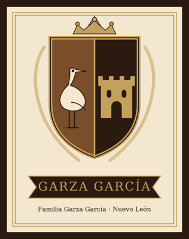

María Clara Valdez Rubio
| María Clara Valdez Rubio | |
|---|---|
 Escudo de armas (Garza García) | |
| Descripción | Esposa de Francisco Antonio Garza González |
| Fechas / lugar | 1858–? |
| Línea familiar | Garza García |
María Clara Valdez Rubio (1858–?) — Bautizada en 1858 en Nava, Coahuila; casó en 1875 en Múzquiz con Francisco Antonio Garza González. Abuela de Alfredo Garza Falcón.
Contenido
María Clara Valdez Rubio[editar]
Bautizada en 1858 en Nava, Coahuila; casó en 1875 en Múzquiz con Francisco Antonio Garza González. Abuela de Alfredo Garza Falcón.
Datos vitales
- Nacimiento: El árbol dice 31 de octubre de 1860; el registro civil tardío de 1882 dice 31 de octubre de 1870; su bautizo es del 14 de noviembre de 1858, la fecha más antigua y más cercana al hecho.
- Bautizo: 14 de noviembre de 1858, San Andrés, Nava, Coahuila.
- Matrimonio: 5 de junio de 1875, Santa Rosa de Lima, Múzquiz.
- Viudez: Aparece como «Clara Valdez Vda. de Garza» en octubre de 1915 y como «Clara Valdés de Garza» en agosto de 1921.
- Defunción: Sin dato.
Familia[editar]
- Padres: Martiniano Valdés y Juana Rubio.
- Cónyuge(s): Francisco Antonio Garza González (M7ZW-DD2, 1848).
- Hijos conocidos: Rosalía, Juana, Martiniano (1883), Francisco, Florentino (1887), Clara, María, Julia, Gaspar y Noé.
- Hermanos: Sin dato.
Actas (3)[editar]
Bautizo de María Clara Valdés Rubio (1858)
Registro parroquial · bautizo · 1858 · México, Coahuila, registros parroquiales, 1627-1978
14 de noviembre de 1858, San Andrés, Nava, Coahuila; entrada 113, pág. 304. Padres: Martiniano Valdés y Juana Rubio.
Registro tardío de nacimiento de «Clarita» Valdez Rubio (1882)
Registro civil · nacimiento · 1882 · México, Coahuila, Registro Civil, 1861-1998
Registrado el 16 de febrero de 1882, Sabinas (pág. 21, reg. 80). Dice nacida el 31 de octubre de 1870 [sic]. Padres: Martiniano Valdez y Juana Rubio.
Matrimonio de Francisco Garza González y Clara Valdés (1875)
Registro parroquial · matrimonio · 1875 · México, Coahuila, registros parroquiales, 1627-1978
5 de junio de 1875, Santa Rosa de Lima, Múzquiz. Franco. Garza Gonsales, 20 años, con Da. Clara Valdés, hija de Don Martiniano Valdés y Juana Rubio. Otros índices: 1:1:JHRP-W8W / 1:1:JHRP-W87 («Mexico, Marriages»), 1:1:DJMF-HGZM; registro civil del 7 de junio de 1875: 1:1:QGZC-9WYY.
Notas, dudas y discrepancias[editar]
- Tiene unas 40 documentos, en su mayoría registros de sus hijos (1876–1926).
Investigación Sefarad-MX, octubre de 2026. Donde no hay documento se indica «sin dato».
Fuentes[editar]
3 fuentes documentales del archivo respaldan esta biografía (actas, matrimonios, testamentos y pruebas de filiación). Las referencias de arriba son sólo las principales; el listado completo está en Pruebas y documentos del archivo (3).
Referencias[editar]
- «María Clara Valdez Rubio», Genealogía Sefardí — investigación Sefarad-MX, genealogiasefardi.site/biografias/maria-clara-valdez-rubio-1858.